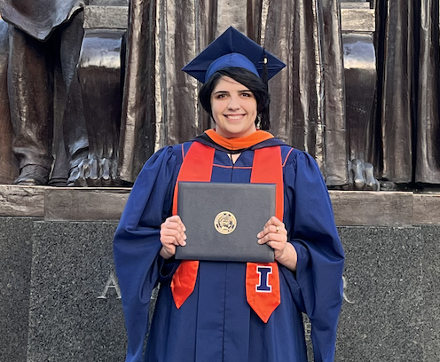

Hi there! I'm Elaina, and I recently completed my Master's in Computer Science at the University of Illinois Urbana-Champaign (UIUC) in May of 2023. My undergraduate degree was in Linguistics, which I completed at Reed College in 2019. Through that experience, I developed a love of working with unscructured data and being able to tell powerful stories through the power of computing. This passion brought me to the iCAN program at UIUC, a bridge program designed to broaden access to computing.While in the iCAN program, I was fortunate to be a DREAM Fellow and conduct research on the nature of scientific impact with Dr. George Chacko. I was able to devote 400 hours of work on an independent project of my choice through the support of the DREAM program. More information about this project, including my project blog, can be found here.